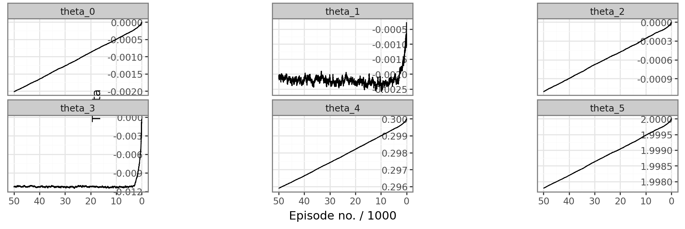
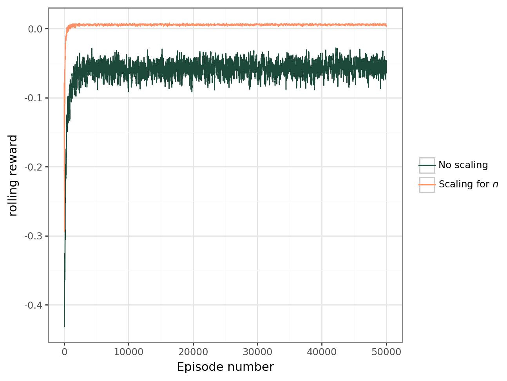
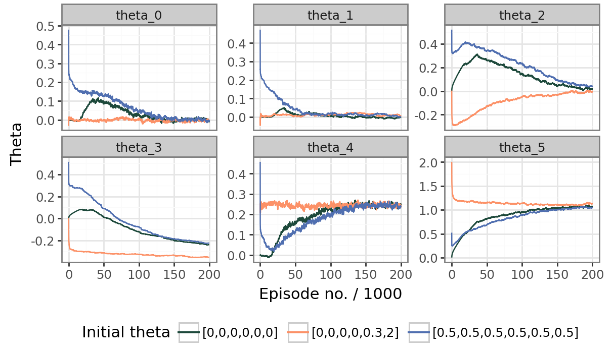
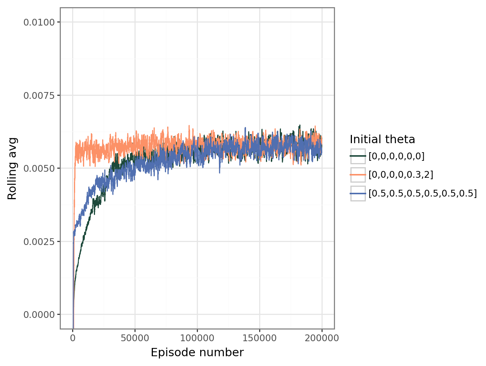

##Doesn't run, as it needs other functions
##but is a good bridge between pseudocode and the
##full code
learning_rate = 1e-8
gamma = 0 #Discount factor
initial_theta = [0,0,0,0,0.3,2] #Good enough theta
sigma = 0.1 #Standard dev for the policy
number_of_episodes = 1000
episode_length = 20
for i in range(number_of_episodes):
#Generate an episode
#Choose an initial starting state, at random(uniformly)
b , n = state_transition()
#Create an episode object, which will have
#The history of the trajectory
episode = Episode(length = episode_length)
for j in range(episode_length):
#Get the action, according to the policy we defined before
delta_t, alpha = get_action(b,n,sigma,theta) #pi(a|s,theta)
#Then compute the residual ratio, after n_iter of the RK2 solver.
res_ratio = compute_res_ratio(b,n,delta_t,alpha,n_iter = 10)
reward = 1 - res_ratio #The lower the res ratio, the better the reward
#Save the state action and rewards inside the episode object
#so that we can access it later
episode.save(b,n,alpha,delta_t,reward, position = j)
#Then get to a new state, at random
b , n = state_transition()
#Now that we have an episode, we can apply REINFORCE
#and update our policy accordingly
for k in range(episode_length):
#Get access to s_k, a_k, r_{k+1}
b , n , delta_t, alpha , reward = episode.get(k)
#Get the log likelihood of the action a_k, as in Eq 6.4
log_lik_gradient = get_log_lik_gradient(b,n,alpha,delta_t,sigma)
#Estimage the return Eq 5.9
estimated_return = 0
for l in range(k, episode_length):
#episode.reward_hist[l] is R_{l+1}
estimated_return += episode.reward_hist[l] * (gamma**(l-t))
##Update the policy
theta = theta + learning_rate * log_lik_gradient * estimated_return
#We end up with an updated theta, that is a better policy.6 Implementation
6.1 A linear approximation of the policy
We have now defined policy gradient methods as a way to address two issues that happened when we translated the problem as defined in the beginning of the last chapter. These issues being the need for a model free method, and dealing with large, and even infinite state and action set.
We need to define a policy of the form \(\pi(a|s,\mathbfit{\theta})\), where \(a=(\Delta t, \alpha)\) is the action of choosing the solver parameters, given a pair of problem parameters, that is some state, \(s=(b,n)\). We choose to have a policy of the form \((\Delta t, \alpha) \approx A(b,n)^\intercal + c\), where \(A\) is a two by two matrix and \(c\) a 2-vector. Furthermore, this policy need to be stochastic for the REINFORCE algorithm to work.
We remark that the action space is, in our case, continuous, so the policy has to be over a continuous action space. In the discrete case, the policy is \(\pi(a|s,\mathbfit{\theta})\) is a probability mass function, so that \(\sum_a\pi(a|s,\mathbfit{\theta}) = 1\). We extend it to continuous action space by considering \(\pi\) as a probability density function instead, and replacing the sum by an integral, that is \(\int_{a\in \mathcal{A}}\pi(a|s,\mathbfit{\theta}) = 1\)[1].
Let \(s\) be a given state, \(s=(b,n)\). We first define the values \(\mu_\alpha\) and \(\mu_{\Delta t}\),
\[ \begin{pmatrix} \mu_\alpha \\ \mu_{\Delta t} \end{pmatrix} = \begin{pmatrix} \theta_0 & \theta_1\\ \theta_2 & \theta_3 \end{pmatrix} \begin{pmatrix} b\\ n \end{pmatrix} + \begin{pmatrix} \theta_4\\ \theta_5 \end{pmatrix}. \tag{6.1}\]
where \(\mathbfit{\theta} = (\theta_0,\theta_1,\dots, \theta_5)^\intercal \in \mathbb{R}^6\). \(\mu_\alpha\) and \(\mu_{\Delta_t}\) can be regarded as “the deterministic policy”. Around this deterministic policy, we add some noise, specifically Gaussian noise to get the stochastic policy
\[ \alpha \sim \mathcal{N}(\mu_\alpha,\sigma^2), \]
and independently, \[ \Delta t \sim \mathcal{N}(\mu_{\Delta t}, \sigma^2). \]
Here \(\mathcal{N}(\mu,\sigma^2)\) is the normal distribution, with mean \(\mu\) and standard deviation \(\sigma\), and we choose \(\sigma\) fixed in this thesis. We thus have a policy of the Since \(\alpha\) and \(\Delta t\) are chosen independently, the joint probability density of both parameters is the product of both marginal probability density function, that is
\[ \pi(a = (\Delta t, \alpha)|s,\mathbfit{\theta}) = f_{1}(\alpha)\cdot f_{2}(\Delta t), \]
where \[ f_1(\alpha) = \frac{1}{\sqrt{2\pi}\sigma}\exp\left(-\frac{(\alpha - \theta_0b-\theta_1n-\theta_4)^2}{2\sigma^2}\right), \]
and similarly,
\[ f_2(\Delta t) = \frac{1}{\sqrt{2\pi}\sigma}\exp\left(-\frac{(\Delta t - \theta_2b-\theta_3n-\theta_5)^2}{2\sigma^2}\right). \]
Taking the logarithm, we get \(\ln(f(\alpha,\Delta t)) = \ln(f_1(\alpha)) + \ln(f_2(\Delta t))\). Thus,
\[ \ln(f_1(\alpha)) = \ln(\frac{1}{\sqrt{2\pi}\sigma}) - \frac{(\alpha - \theta_0b-\theta_1n-\theta_4)^2}{2\sigma^2}. \]
We now take the gradient w.r.t \(\mathbfit{\theta}\) to get
\[ \nabla_{\mathbfit{\theta}} \ln(f_1(\alpha)) = \xi_\alpha (b\theta_0,n\theta_1,0,0,\theta_4,0)^\intercal, \tag{6.2}\]
where \(\xi_\alpha = \frac{(\alpha - \theta_0b-\theta_1n-\theta_4)}{\sigma^2}\).
Doing a similar thing with \(\Delta t\), we get the gradient,
\[ \nabla_{\mathbfit{\theta}} \ln(f_2(\Delta t)) = \xi_{\Delta t}(0,0,b\theta_2,n\theta_3,0,\theta_5)^\intercal, \tag{6.3}\]
where \(\xi_{\Delta t} = \frac{(\Delta t - \theta_2b-\theta_3n-\theta_5)}{\sigma^2}\). We now add both gradients together to get the gradient of the policy, for a specific action \(a = (\alpha, \Delta t)\) and state \(s=(b,n)\):
\[ \nabla_{\mathbfit{\theta}} \ln\pi(a|s,{\mathbfit{\theta}}) = \xi_\alpha (b\theta_0,n\theta_1,0,0,\theta_4,0)^T+ \xi_{\Delta t}(0,0,b\theta_2,n\theta_3,0,\theta_5)^\intercal. \tag{6.4}\]
6.2 Implementation of the REINFORCE algorithm
Now that everything has been defined, the REINFORCE algorithm can be applied to find an optimal policy.
6.2.1 Algorithm code
We present in this section the full training in a pseudo code format. The full code is written in a more modular way, and is available on the appendix, as well as on GitHub.
6.2.2 A first experiment
We implement the REINFORCE algorithm to the test problem. There are a few hyperparameters to set.
- The learning rate is set to \(\alpha=1\times10^{-8}\).
- The discount rate is set to \(\gamma = 0\), as the state transitions have no relationship with the actions taken, there is no reason to prefer long term rewards.
- Because the discount rate is so low, there is no bias added by estimating the returns at the end of the episodes. The episodes length is set to \(20\) as we want to use the updated policy as often as possible.
- The standard deviation of the policy parameters is set to \(\sigma = 0.1\).
This leaves the choice of the initial value for \(\mathbfit{\theta}\). While it is possible for the parameters to be random, or all set to 0, we use the experiment done in chapter 4 to use. In Figure 3.2 (a), it seems that a policy of \(\alpha = 0.3\) and \(\Delta t = 2\) is a reasonable choice. Since this was done only for a single set of problem parameters, we have no idea of the relationship between problem parameters and optimal solver parameters. Therefore, we only set the parameter \(\theta_4 = 0.3\), and \(\theta_5=2\), the other parameters are set to 0.
The algorithm is run for 50000 episodes, and we observe the evolution of the parameters theta(Figure 6.1).
Since the discount rate is set to \(0\), in any state, the return is the instant reward received by the agent over a single episode. So, for an episode of length \(l\), we have the rewards \(r_1, r_2, \dots, r_l\). Then, we can plot the average reward \(r_{av} = \frac{r_1 + r_2 +\dots + r_l}{l}\) over each episode. Because the variance of \(r_{av}\) is still high, we use the rolling average of \(r_{av}\) over the last \(k = 50\) episodes as a smoother.
The average reward is the no scaling reward in Figure 6.2 and is trending upward with successive episodes, which is the intended behavior of the algorithm. However, there are certain problems that have been made apparent by the two plots:
- Despite running the algorithm for a long time, some of the elements of \(\mathbfit{\theta}\) have barely changed, and it is clear that we are far from any convergence of the reward function.
- Even with smoothing, it is apparent that the method has a high variance.
- It seems that \(\theta_1\) and \(\theta_3\) vary quite a bit over time whereas the other parameters have a steady rate of change.


The slow apparent convergence rate can not be mitigated by a higher learning rate, as this empirically leads to divergence issues.
The high variance is typical of reinforcement learning tasks, and in particular Monte Carlo based methods, which REINFORCE is a part of. That being said, there exists much better methods that can reduce this variance, at the expense of introducing some bias, such as for example actor-critics methods [2, Ch. 13.5], or proximal policy optimization (PPO) [3]. Both of these methods are not explored in this thesis.
6.3 Scaling the parameters
To address the slow convergence problem, we start with a motivating example.
6.3.1 A motivating example of gradient descent
Consider the loss function \(f(x,y) = x^2 + 9y^2\). The function admits a global minimum at \(x = y = 0\), and its gradient given by
\[ \nabla f(x,y) = (2x,18y)^\intercal. \]
Therefore, the gradient descent iteration, with learning rate \(\alpha>0\), is the iteration
\[ \begin{pmatrix} x_{t+1}\\ y_{t+1} \end{pmatrix} = \begin{pmatrix} x_t\\ y_t \end{pmatrix} - \alpha \begin{pmatrix} 2x_t\\ 18y_t \end{pmatrix}. \]
That is \(x_{t+1} = (1-2\alpha)x_t\) and \(y_{t+1} = (1-18\alpha)y_t\). The iterates converge to \(x=y=0\) if and only if \(\alpha<1/9\). If however, \(\frac{1}{9}<\alpha<1\), we will have convergence for \(x\), but not for \(y\).
The reason for this is that the gradient is steeper in the \(y\) direction than the \(x\) direction, which leads to comparatively bigger change in \(y\) than \(x\) in the gradient descent iterations.
To remedy this, we can use a change of variable \(z = 3y\). Then \(f(x,z) = x^2 + z^2\). The gradient descent iteration is then given by
\[ \begin{pmatrix} x_{t+1}\\ y_{t+1} \end{pmatrix} = \begin{pmatrix} x_t\\ y_t \end{pmatrix} - \alpha \begin{pmatrix} 2x_t\\ 2y_t \end{pmatrix}. \]
That is, \(x_{t+1} = (1-2\alpha_x)x_t\) and \(z_{t+1} = (1-2\alpha_y)y_t\). This converges to \(0\) if and only if \(0<\alpha<\frac{1}{2}\), which means we can afford a much bigger learning rate. With \(\alpha = \frac{1}{2}\), the gradient descent algorithm can now converge to \(0\) in a single iteration!
6.3.2 Changing the variable
This section is born from an intuitive idea and is for this reason less formal than the rest. Looking at the equation for the gradient of the log policy (Equation 6.4), we notice that the gradient has a similar expression in each direction. More particularly, the gradient in the direction \(i\) is given by the partial derivative
\[ \frac{\partial \ln \pi(a|s,\mathbfit{\theta})}{\partial \theta_i} = \xi_{\alpha,\Delta t} (\_) \theta_i \]
where \(\xi_{\alpha,\Delta t}\) is either \(\xi_\alpha\) (Equation 6.2) or \(\xi_{\Delta t}\) (Equation 6.3), and \((\_)\) is either:
- \(b\) in the directions \(\theta_0\) and \(\theta_2\).
- \(n\) in the directions \(\theta_1\) and \(\theta_3\).
- \(1\) in the directions \(\theta_4\) and \(\theta_5\).
Using the motivating example above, we’ve seen that it can be a good idea to rescale some variables so that the gradient is as “steep” in all directions. However, in this case, \(n\) can vary between \(5\) and \(200\), while \(b\) only varies between \(0\) and \(1\). This motivate the idea that, in order to make a gradient “as steep” in all directions.
Instead of using \(n\) directly, we now use the scaled variable
\[ n' = \frac{n-5}{200}. \]
Since \(n\) can vary between \(5\) and \(200\), \(n'\) can have values between \(0\) and \(1\), just like the values of \(b\). Everything then follows by simply replacing \(n\) by \(n'\) in Section 6.1. The new deterministic policy is
\[ \begin{pmatrix} \mu_\alpha \\ \mu_{\Delta t} \end{pmatrix} = \begin{pmatrix} \theta_0 & \theta_1\\ \theta_2 & \theta_3 \end{pmatrix} \begin{pmatrix} b\\ n' \end{pmatrix} + \begin{pmatrix} \theta_4\\ \theta_5 \end{pmatrix}, \tag{6.5}\]
and the equation of the gradient is unchanged, with the exception of replacing \(n\) by \(n'\) everywhere.
With this change implemented, we rerun the first experiment. All the parameters are the same, except that the learning rate can is now set to \(\alpha = 2\times 10^{-4}\) without divergence. Compared to the first experiment, the average episode reward is much better, as seen in Figure 6.2.


6.4 Impact of initial conditions
Gradient based iterations use the local information about an objective (or loss) function \(J(\theta)\) to compute the update \(\mathbfit{\theta} \rightarrow \mathbfit{\theta} \pm \alpha \nabla J(\mathbfit{\theta})\). This local behavior also means that any convergence of gradient descent is to a local minimum, and we can’t be certain that this mimimum is a global minimum.
Let us test whether the algorithm converges to the same values regardless of initial conditions. The third experiment is then to run the algorithm with the same parameters, but with varied initial conditions, and to visualize the results, both in the average rewards and the evolution of \(\mathbfit{\theta}\) over 200000 episodes.
The evolution of \(\mathbfit{\theta}\) is in Figure 6.3, and the rolling average of the average episode reward is plotted in Figure 6.4 for different initial value for \(\mathbfit{\theta}\). It turns out that while convergence in reward is to the same values, the parameter \(\theta_3\) does not seem to converge to the same value. Furthermore, even with such a large amount of episodes, it is not clear if the other parameters converged.
6.5 Further results
The average reward of the episode is a nice way to report on the performance of the method. However, it is difficult to interpret how the model performs once we have found some optimal parameters \(\mathbfit{\theta}^*\). In particular, by using the REINFORCE algorithm, the policy function has to be stochastic during training. The actual policy we choose can, however, be deterministic. So, at the risk of adding some bias, we remove the noise \(\sigma\) in the policy and choose to use the “deterministic policy” \(\alpha = \mu_\alpha\), \(\Delta t = \mu_{\Delta t}\), as in Equation 6.1, and we denote this policy by \(\pi_d(a|s,\mathbfit{\theta}^*)\). For the value of \(\mathbfit{\theta}^*\), we use its last value in the second experiment, which is (with some rounding off)
\[ \mathbfit{\theta}^* = (-3.606 \times 10^{-3},4.476\times 10^{-3},-3.598\times 10^{-4},-0.3542 ,0.2435,1.1305)^\intercal. \]
Then, we compute the value of \(\rho_{10,b,n}\) using this policy and for different values of \(n\) and \(b\), the results are as below in Figure 6.5. While we have convergence at any point, the convergence is slow, and the maximum value for \(\rho_{10}\) is \(0.99917\). Referring back to the grid search experiment(see Figure 3.2), this slow convergence is also partly an issue with the solver itself.
Since we trained the policy on \(\rho_{10}\), it may be a good idea to check if the solver still converges when we compute more iterations. The result are in Figure 6.5. There are some points where the solver diverges, which is a problem in particular because the point where it diverges are for small values of \(b\), which is often the case physically.
This divergence indicates that it may be a good idea to further train the learned policy by computing \(\rho_{100}\), and having a reward of \(1-\rho_{100}\) instead of \(1-\rho_{10}\). This of course means that the training time will have to be longer. In that case, we can set \(\mathbfit{\theta}^*\) as a starting parameter for the policy.